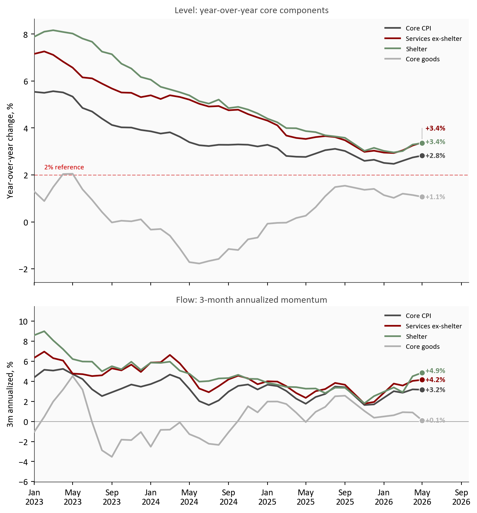
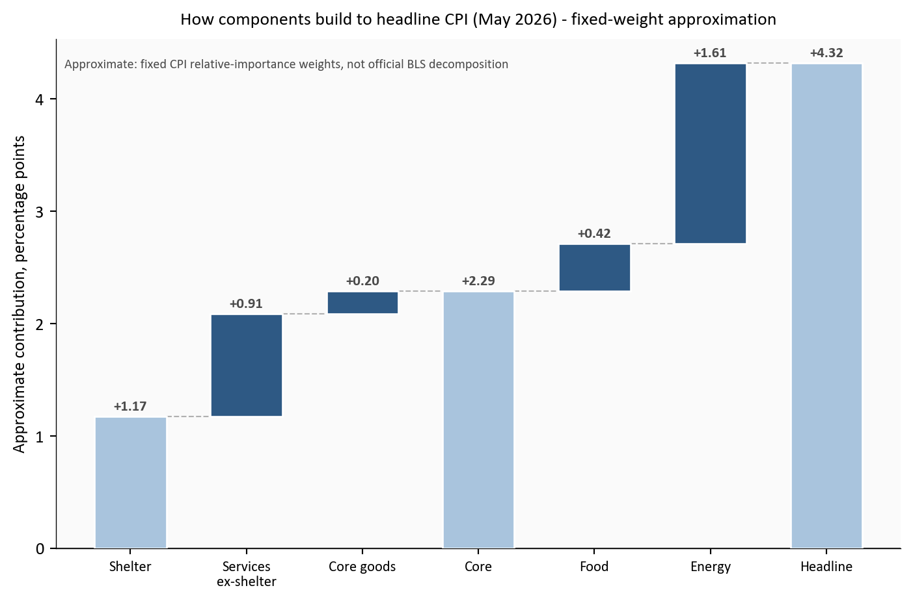
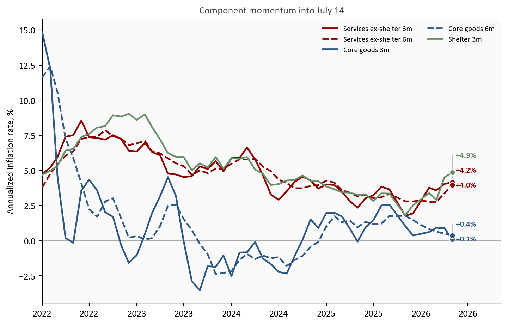
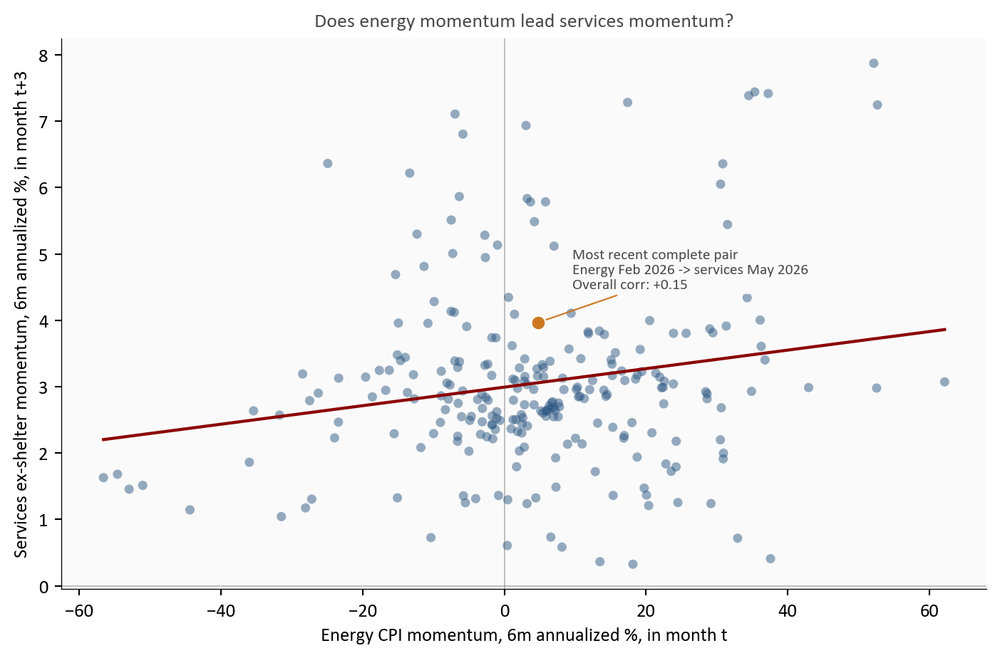
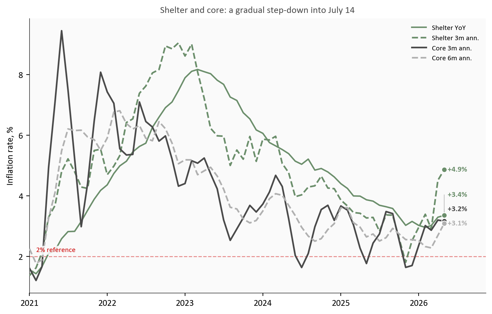

Core Inflation Persistence: What the July 14 CPI Release Will Test in Services ex-Shelter, Goods, and Shelter
Ahead of the July 14 CPI release, the key test is whether services ex-shelter momentum remains firm while goods disinflation and shelter deceleration continue to offset core persistence.
economics
inflation
data visualization
federal reserve
Author
Yoram Gilboa
Published
July 11, 2026
Headline CPI YoY baseline
+4.2%
May 2026
Core CPI YoY baseline
+2.8%
MoM +0.2%
Services momentum into July 14
+4.2%
6m ann. +4.0%
Goods and shelter offset
+0.1%
Shelter 3m ann. +4.9%
Latest data used: May 2026 | Baseline heading into the July 14 CPI release | Source: BLS CPI and labor series via FRED
The July 14 CPI release will test one narrow but decisive question: is core inflation persistence still being driven by services ex-shelter, or is the mix shifting fast enough through goods deflation and slower shelter inflation to keep core on a gradual cooling path.1 Through May 2026, headline CPI stood at +4.2% year over year while core stood at +2.8%. Services ex-shelter momentum stood at +4.2% on a 3-month annualized basis, core goods momentum was +0.1%, and shelter momentum was +4.9% despite continued deceleration from earlier peaks. Unlike the May report, where energy drove the headline story, this release is expected to reveal whether core persistence has shifted back toward services ex-shelter while goods and shelter continue to offset.
NoteReproducing this analysis
The Python code used to generate each chart is included in this post. Click on any code block to see the full implementation. The complete data pipeline includes:
Inline fetch block using pandas_datareader (with a FRED CSV fallback) for CPI and labor series.
Inline cleaning and transformation block computing MoM, YoY, and annualized momentum.
Inline chart blocks that generate all figures and save preview images.
All data sourced from FRED. The component contribution waterfall multiplies each group’s year-over-year rate by a fixed CPI relative-importance weight. Those weights are the basket shares published in the BLS relative-importance table for December 2025 (the most recent annual update): shelter 0.35, services ex-shelter 0.27, core goods 0.19, food 0.14, and energy 0.07. They are rounded representative shares, so the bars show scale and direction, not the exact BLS decomposition arithmetic (which re-weights monthly). Because shelter carries by far the largest weight, the exact percentage-point values are sensitive to these choices even though the ordering is not; the Limitations section makes that caveat explicit. The goal is to clarify what the July 14 release is expected to reveal about offsetting inflation forces.
1. Headline vs core components: two stories in one report
The inflation backdrop heading into the July 14 print still contains two distinct stories. Headline inflation remains sensitive to energy and food swings, while core persistence depends more on service categories with slower adjustment dynamics. Unlike the May release, where the energy channel dominated the headline narrative, this report will test whether services ex-shelter remains the core pressure point while goods and shelter provide partial offset. The key signal is not headline alone. It is whether services ex-shelter prints above the range consistent with 2 percent core inflation, and whether goods and shelter continue to absorb part of that pressure.
Show code
# Two stacked panels sharing an x-axis: the top shows the level story (YoY),# the bottom shows the flow story (3-month annualized momentum). Both panels use# the same color per component so the reader learns the mapping once.plot = df[df.index >= pd.Timestamp("2023-01-01")]fig, (ax1, ax2) = plt.subplots(2, 1, figsize=(7.3, 7.8), sharex=True, height_ratios=[3, 2])# One shared color per component, reused across both panels.comp_colors = {"Core CPI": COLORS["neutral"],"Services ex-shelter": COLORS["accent"],"Shelter": COLORS["secondary"],"Core goods": COLORS["light"],}# --- Top panel: year-over-year rates for the four core components ---series_top = [ ("Core CPI", "core_yoy"), ("Services ex-shelter", "services_ex_shelter_yoy"), ("Shelter", "shelter_yoy"), ("Core goods", "core_goods_yoy"),]top_texts = []for label, col in series_top: color = comp_colors[label] s = plot[col].dropna() ax1.plot(s.index, s, color=color, linewidth=1.8, zorder=3, label=label) ax1.scatter(s.index[-1], s.iloc[-1], s=40, color=color, zorder=5, edgecolors="white", linewidth=0.8)# Endpoint labels now show only the value; the legend carries the series name. top_texts.append({"x": s.index[-1], "y": s.iloc[-1], "text": f"{fmt_chg(s.iloc[-1])}%", "color": color})ax1.axhline(2, color=COLORS["fed_target"], linestyle="--", linewidth=1, alpha=0.5)# "2% reference" sits just ABOVE the dotted line so it never touches the core goods line below it.ax1.text(plot.index[1], 2.18, "2% reference", fontsize=8, color=COLORS["fed_target"], va="bottom", bbox=dict(facecolor="#fafafa", edgecolor="none", pad=1.5, alpha=0.85))ax1.set_title("Level: year-over-year core components", fontsize=10.5, color=COLORS["neutral"], pad=6)ax1.set_ylabel("Year-over-year change, %")ax1.set_ylim(min(plot["core_goods_yoy"].min() -0.8, -2.5), max(plot["services_ex_shelter_yoy"].max() +1.4, 6.0))ax1.legend(loc="upper right", fontsize=8, frameon=False)label_endpoints(ax1, top_texts)# --- Bottom panel: 3-month annualized momentum, including Core CPI ---series_bottom = [ ("Core CPI", "core_ann3"), ("Services ex-shelter", "services_ex_shelter_ann3"), ("Shelter", "shelter_ann3"), ("Core goods", "core_goods_ann3"),]bottom_texts = []for label, col in series_bottom: color = comp_colors[label] s = plot[col].dropna() ax2.plot(s.index, s, color=color, linewidth=1.8, zorder=3, label=label) ax2.scatter(s.index[-1], s.iloc[-1], s=40, color=color, zorder=5, edgecolors="white", linewidth=0.8) bottom_texts.append({"x": s.index[-1], "y": s.iloc[-1], "text": f"{fmt_chg(s.iloc[-1])}%", "color": color})ax2.axhline(0, color=COLORS["neutral"], linewidth=0.8, alpha=0.45)ax2.set_title("Flow: 3-month annualized momentum", fontsize=10.5, color=COLORS["neutral"], pad=4)ax2.set_ylabel("3m annualized, %")ax2.xaxis.set_major_formatter(mdates.DateFormatter("%b\n%Y"))ax2.margins(y=0.20)ax2.legend(loc="upper right", fontsize=8, frameon=False)label_endpoints(ax2, bottom_texts)# Reserve extra room on the right so the endpoint value labels have space.for ax in (ax1, ax2): date_range = plot.index[-1] - plot.index[0] ax.set_xlim(plot.index[0], plot.index[-1] + date_range *0.12)plt.tight_layout()fig.savefig(IMG_DIR /"core-inflation-persistence-dashboard.png", dpi=160, bbox_inches="tight")

Figure 1: Core component dashboard heading into the July 14 release. Top panel: year-over-year rates show services ex-shelter as the highest core component, against continued core goods disinflation and easing shelter. Bottom panel: 3-month annualized momentum shows the near-term trajectory the release will test. Source: BLS via FRED (CPILFESL, CUSR0000SASLE, CUSR0000SACL1E, CUSR0000SAH1).
The top panel shows the level problem. As of May 2026, services ex-shelter stood as the highest major core component and sat well above the Federal Reserve’s 2 percent objective. The bottom panel shows the flow problem: near-term momentum has cooled from prior highs, but not enough to declare a clean break. The July 14 release will reveal whether one more firm services print keeps core inflation in a sticky range even as headline pressure fades.
2. Services ex-shelter momentum: recent trajectory and why it matters
Services ex-shelter is the core category most tightly linked to labor-intensive costs, pricing power in local services, and slower repricing cycles.2 Markets and policymakers therefore track its annualized momentum more closely than any single headline print. Through May 2026, services ex-shelter momentum stood at +4.2% on a 3-month annualized basis and +4.0% on a 6-month basis.3 Those readings were below earlier cyclical highs, but still above the pace consistent with a sustained return to 2 percent core inflation.
Show code
# Build a waterfall from component contributions (in percentage points). The# first three groups accumulate to an approximate CORE subtotal; food and# energy then bridge from core up to the approximate HEADLINE total. Each# floating bar starts where the previous one ended, so the reader can see how# the pieces sum rather than reading five disconnected bars.pp = contrib_df *100# fraction -> percentage points; order: shelter, services, goods, food, energysteps = [ ("Shelter", pp["Shelter"], "step"), ("Services\nex-shelter", pp["Services ex-shelter"], "step"), ("Core goods", pp["Core goods"], "step"), ("Core", None, "subtotal"), ("Food", pp["Food"], "step"), ("Energy", pp["Energy"], "step"), ("Headline", None, "total"),]# All bars are shades of blue. Shelter and the two milestone bars (Core, Headline)# use a lighter blue so they read as reference levels; the individual component# steps (services ex-shelter, core goods, food, energy) use a darker blue to pop.LIGHT_BLUE ="#a9c4dd"DARK_BLUE = COLORS["primary"]light_set = {"Shelter", "Core", "Headline"}fig, ax = plt.subplots(figsize=(7.4, 4.9))running =0.0# cumulative height as we walk left to rightcore_subtotal =None# captured once the first three core groups are summedtops = [] # (x, top_y) used to draw connectors between barsfor i, (label, value, kind) inenumerate(steps): color = LIGHT_BLUE if label in light_set else DARK_BLUEif kind =="step": bottom = running height = value running += value top = running ax.bar(i, height, bottom=bottom, width=0.62, color=color, edgecolor="white", zorder=3) ax.text(i, top + (0.03if value >=0else-0.03),f"{value:+.2f}", ha="center", va="bottom"if value >=0else"top", fontsize=8.5, color=COLORS["neutral"], fontweight="bold") tops.append((i, top))else:# Subtotal / total bars are anchored at zero and show a cumulative level. total = runningif kind =="subtotal": core_subtotal = total ax.bar(i, total, width=0.62, color=color, edgecolor="white", zorder=3) ax.text(i, total +0.03, f"{total:+.2f}", ha="center", va="bottom", fontsize=8.5, color=COLORS["neutral"], fontweight="bold") tops.append((i, total))# Thin dashed connectors linking each bar top to the next bar's starting height.for (x0, y0), (x1, _) inzip(tops[:-1], tops[1:]): ax.plot([x0 +0.31, x1 -0.31], [y0, y0], color=COLORS["light"], linewidth=0.8, linestyle="--", zorder=2)ax.axhline(0, color=COLORS["neutral"], linewidth=0.8)ax.set_xticks(range(len(steps)))ax.set_xticklabels([s[0] for s in steps], fontsize=8.5)ax.set_ylabel("Approximate contribution, percentage points")ax.set_title(f"How components build to headline CPI ({stats['latest_month_short']}) - fixed-weight approximation", fontsize=10.5, pad=8)ax.text(0.01, 0.96, "Approximate: fixed CPI relative-importance weights, not official BLS decomposition", transform=ax.transAxes, fontsize=7.6, color=COLORS["neutral"], va="top", bbox=dict(facecolor="#fafafa", edgecolor="none", pad=1.5, alpha=0.85))plt.tight_layout()fig.savefig(IMG_DIR /"contribution-waterfall-latest.png", dpi=160, bbox_inches="tight")

Figure 2: Approximate fixed-weight waterfall of year-over-year CPI contributions for the latest month. Shelter and services ex-shelter build the core subtotal upward; core goods trims it; food and energy then bridge core to the headline total. Contributions are approximate: they use fixed CPI relative-importance weights, not the official BLS decomposition. Source: BLS via FRED.
Source: FRED CPI components with fixed-weight approximation for decomposition.
The waterfall explains why core persistence remains a live risk heading into July 14. Shelter and services ex-shelter build most of the positive contribution before core goods trims it back, leaving an approximate core contribution of 2.3 pp. Food and energy then bridge core up to the headline total. Core goods is helping, but its deflationary impulse can fade if import prices, freight costs, or inventory normalization shift. In practical terms, the release does not need a broad surprise to keep core sticky: it only needs services ex-shelter momentum to stay above trend while goods disinflation levels off.
Why fixed weights instead of the official BLS decomposition? BLS builds its published contributions from monthly-updated relative-importance weights and a chained aggregation that is not reconstructable from the seasonally adjusted index levels FRED exposes. Using one fixed set of relative-importance shares keeps the exhibit fully reproducible from the same public series the rest of the post uses, and makes the arithmetic transparent: each bar is simply a weight times a year-over-year rate. The tradeoff is that the exact percentage-point heights are approximate. They track the direction and rough scale of each component’s contribution, not the official attribution to the decimal.
3. Goods deflation vs energy passthrough: the offsetting forces
A quick definition first, since the terms matter here. Disinflation means prices are still rising but at a slower pace, and it is the right word whenever a component’s rate is easing toward or sitting below the roughly 2 percent pace consistent with the Fed’s target, even when that rate is still positive. Deflation is the stronger case of prices actually falling, a negative rate. Every core component in this post is disinflating, not deflating: the readings are positive but running below 2 percent. Core goods is the closest to the deflation line. It is barely positive now and spent much of 2023 and 2024 in outright deflation, which is exactly why it has been the main force pulling core down.
Goods and energy channels are moving in opposite directions for core inflation risk heading into the July 14 print. Through May, core goods had been the main disinflation buffer, with 3-month annualized momentum at +0.1% and 6-month momentum at +0.4%, both far below the 2 percent pace. That softness has a few drivers: post-pandemic supply chains have fully normalized, freight and input costs have come down from their peaks, retailers have worked through the excess inventory they built during the shortage years, and a firmer dollar has held down imported goods prices. Energy, by contrast, remained the most plausible near-term pass-through risk into transportation-sensitive services and then broader service pricing.
Artificial intelligence is not yet a distinct force in the CPI basket, and it is worth being honest about that. There is no AI line item, and its measurable price effect so far is indirect and small: some downward pressure in categories exposed to automation and cheaper software-driven services, and upside pressure on the electricity demand that data centers create, which feeds the energy component. For now the AI effect is a slow structural undercurrent, not a driver of the month-to-month core prints this release will show.
Show code
m = df[df.index >= pd.Timestamp("2022-01-01")]fig, ax = plt.subplots(figsize=(7.6, 4.9))# Each series is drawn once and named in the top-right legend; only the latest# value is printed next to each endpoint dot, staggered so nothing overlaps.lines = [ ("services_ex_shelter_ann3", "Services ex-shelter 3m", COLORS["accent"], "-"), ("services_ex_shelter_ann6", "Services ex-shelter 6m", COLORS["accent"], "--"), ("core_goods_ann3", "Core goods 3m", COLORS["primary"], "-"), ("core_goods_ann6", "Core goods 6m", COLORS["primary"], "--"), ("shelter_ann3", "Shelter 3m", COLORS["secondary"], "-"),]end_labels = []for col, label, color, ls in lines: s = m[col].dropna() ax.plot(s.index, s, color=color, linestyle=ls, linewidth=1.8, zorder=3, label=label) ax.scatter(s.index[-1], s.iloc[-1], s=35, color=color, zorder=5, edgecolors="white", linewidth=0.8)# Only the value goes next to the dot; the legend carries the series name. end_labels.append({"x": s.index[-1], "y": s.iloc[-1],"text": f"{fmt_chg(s.iloc[-1])}%", "color": color})ax.axhline(0, color=COLORS["neutral"], linewidth=0.8, alpha=0.45)ax.set_ylabel("Annualized inflation rate, %")ax.xaxis.set_major_formatter(mdates.DateFormatter("%Y"))ax.set_title("Component momentum into July 14", fontsize=10.5, color=COLORS["neutral"], pad=6)ax.legend(loc="upper right", fontsize=8, frameon=False, ncol=2)# Extend the x-axis past the last point so the endpoint value labels have room.date_range = m.index[-1] - m.index[0]ax.set_xlim(m.index[0], m.index[-1] + date_range *0.12)# Two services readings are nearly equal, so stagger the value labels vertically# with leader lines back to each endpoint.label_endpoints(ax, end_labels)plt.tight_layout()fig.savefig(IMG_DIR /"momentum-fan-components.png", dpi=160, bbox_inches="tight")

Figure 3: Component momentum comparison heading into the July 14 release using 3-month and 6-month annualized rates. Services ex-shelter remains firmer than both shelter and core goods, while goods continues to provide the largest disinflation offset. Source: BLS via FRED.
The offset has real policy significance. If goods remains negative or near zero while services keeps drifting down, core can continue cooling without a sharp demand slowdown. If goods normalization stalls and energy pass-through nudges services back up, core persistence becomes harder to unwind. The July 14 release will be read through this lens.
Show code
# Scatter of the lagged energy -> services relationship. Every gray point is a# single month t: x is energy momentum at t, y is services momentum at t+3.# The pairing is built with shift(-3) in the data block, so the y value always# comes from 3 months after the x value.p = passthrough.copy()p = p[p.index >= pd.Timestamp("2005-01-01")]fig, ax = plt.subplots(figsize=(7.4, 4.9))ax.scatter(p["energy_ann6"], p["services_ex_shelter_ann6_lead3"], color=COLORS["primary"], alpha=0.5, s=24, edgecolors="none")# Least squares fit gives a visual summary of direction without claiming causality.x = p["energy_ann6"].valuesy = p["services_ex_shelter_ann6_lead3"].valuescoef = np.polyfit(x, y, 1)xx = np.linspace(np.nanmin(x), np.nanmax(x), 120)ax.plot(xx, coef[0] * xx + coef[1], color=COLORS["accent"], linewidth=1.6)# Highlight the most recent complete pair. Its x is energy momentum in the base# month; its y is services momentum 3 months later. Because the data end in the# latest CPI month, the base month sits ~3 months earlier, which is why the x is# fixed by older energy data while the y reaches the latest month.latest_point = passthrough.loc[passthrough.index.max()]ax.scatter(latest_point["energy_ann6"], latest_point["services_ex_shelter_ann6_lead3"], color=COLORS["warning"], s=55, zorder=5, edgecolors="white", linewidth=0.8)ax.annotate(f"Most recent complete pair\nEnergy {stats['passthrough_x_month']} -> services {stats['passthrough_y_month']}\nOverall corr: {stats['passthrough_corr']:+.2f}", xy=(latest_point["energy_ann6"], latest_point["services_ex_shelter_ann6_lead3"]), xytext=(18, 18), textcoords="offset points", fontsize=8, color=COLORS["neutral"], bbox=dict(facecolor="#fafafa", edgecolor="none", pad=1.5, alpha=0.85), arrowprops=dict(arrowstyle="-", color=COLORS["warning"], lw=0.8),)ax.axhline(0, color=COLORS["neutral"], linewidth=0.7, alpha=0.35)ax.axvline(0, color=COLORS["neutral"], linewidth=0.7, alpha=0.35)ax.set_xlabel("Energy CPI momentum, 6m annualized %, in month t")ax.set_ylabel("Services ex-shelter momentum, 6m annualized %, in month t+3")ax.set_title("Does energy momentum lead services momentum?", fontsize=10.5, color=COLORS["neutral"], pad=6)plt.tight_layout()fig.savefig(IMG_DIR /"energy-services-passthrough-scatter.png", dpi=160, bbox_inches="tight")

Figure 4: Historical analog: each gray dot is one month, pairing energy CPI momentum (x, 6-month annualized) with services ex-shelter momentum three months later (y, 6-month annualized). The upward fit line means firmer energy has often preceded firmer services, but the wide scatter shows the link is far from mechanical. The highlighted dot is the most recent complete pair. Source: BLS via FRED.
Read the scatter as a lead-lag test: the horizontal axis is energy momentum in a given month, and the vertical axis is services ex-shelter momentum three months later, so each dot asks whether an energy move tends to show up in services a quarter afterward. The highlighted dot is the most recent month for which both halves of that pair exist. Its horizontal position is fixed by energy momentum in Feb 2026, while its vertical position uses services momentum in May 2026, three months later, which is the latest available services reading. The fit line slopes up, so higher energy momentum has often preceded firmer services momentum, but the dispersion is wide (overall correlation of about +0.15). Energy can raise near-term persistence odds without deterministically resetting core inflation. It is one channel among several, and labor-market cooling can damp the pass-through.
4. Shelter inflation: lag structure and forward path
Shelter inflation usually turns later than market rents because lease resets and survey methods smooth adjustments over time. That lag has been visible throughout this cycle. As of May, shelter year-over-year inflation remained above core goods and near services levels, but its momentum had eased materially from peak. The July 14 release will test whether that step-down remains intact.
Shelter is also the core category most exposed to interest rates, though the transmission is indirect and slow. Higher policy rates lift mortgage rates, which cools home purchase demand and pushes some would-be buyers into renting, supporting rents; at the same time, expensive financing slows new construction, which limits the supply that would eventually ease rents. Those forces partly offset and, crucially, reach the CPI shelter index only after the market-rent turn works through the stock of existing leases. So even as the Fed holds rates high, the shelter component keeps decelerating on the lagged path set by market rents a year or more earlier, rather than responding quickly to the current rate stance.
Show code
s = df[df.index >= pd.Timestamp("2021-01-01")]fig, ax = plt.subplots(figsize=(7.6, 4.9))# Shelter (level and momentum) plotted against core momentum. Each series is# named in the top-right legend; only the latest value is printed by each dot.# Linestyle distinguishes the two shelter series that share the same color.series = [ ("Shelter YoY", "shelter_yoy", COLORS["secondary"], "-", 1.6), ("Shelter 3m ann.", "shelter_ann3", COLORS["secondary"], "--", 1.8), ("Core 3m ann.", "core_ann3", COLORS["neutral"], "-", 1.8), ("Core 6m ann.", "core_ann6", COLORS["light"], "--", 1.8),]end_labels = []for label, col, color, ls, lw in series: t = s[col].dropna() ax.plot(t.index, t.values, color=color, linestyle=ls, linewidth=lw, zorder=3, label=label) ax.scatter(t.index[-1], t.values[-1], s=34, color=color, zorder=5, edgecolors="white", linewidth=0.8) end_labels.append({"x": t.index[-1], "y": t.values[-1],"text": f"{fmt_chg(t.values[-1])}%", "color": color})ax.axhline(2, color=COLORS["fed_target"], linestyle="--", linewidth=1, alpha=0.45)ax.text(s.index[1], 2.15, "2% reference", fontsize=8, color=COLORS["fed_target"], bbox=dict(facecolor="#fafafa", edgecolor="none", pad=1.5, alpha=0.85))ax.set_ylabel("Inflation rate, %")ax.xaxis.set_major_formatter(mdates.DateFormatter("%Y"))ax.set_title("Shelter and core: a gradual step-down into July 14", fontsize=10.5, color=COLORS["neutral"], pad=6)ax.legend(loc="upper right", fontsize=8, frameon=False)# Extra right-hand room so the value labels are not clipped.date_range = s.index[-1] - s.index[0]ax.set_xlim(s.index[0], s.index[-1] + date_range *0.10)# The two shelter values can sit almost on top of each other at the right edge,# so stagger all four value labels vertically with leader lines.label_endpoints(ax, end_labels)plt.tight_layout()fig.savefig(IMG_DIR /"shelter-core-composite.png", dpi=160, bbox_inches="tight")

Figure 5: Shelter vs core momentum composite heading into the July 14 release: shelter still runs above target-consistent levels, but both shelter and core 3-month annualized rates have trended down from prior peaks. Source: BLS via FRED.
Shelter now behaves more like a slow, steady descent than a fresh shock. Even with continued deceleration, it still adds meaningful positive inflation because of its large basket weight. That mechanical weight means progress can look slow in headline terms even when underlying momentum is improving.
5. What this means for the Fed, consumers, and markets
The setup heading into July 14 is balanced but not ambiguous. Core disinflation is still progressing, just not fast enough to make inflation risk irrelevant. Through May 2026, services ex-shelter momentum stood at +4.2%, core goods momentum at +0.1%, and shelter momentum at +4.9% on a lagged downtrend. A soft headline print would not settle the persistence question; a firm services print would keep markets cautious on near-term easing.
For the Fed: The mix argues for patience in both directions. The June dot plot signaled a higher-for-longer bias, and the softer jobs backdrop complicates that signal rather than cancelling it. With unemployment at 4.3% and average hourly earnings growth near +3.4%, demand is cooling gradually, not collapsing. That supports a data-dependent hold: no case for renewed tightening, but no proof yet that core persistence is behind us.
For consumers: The relief is real but uneven. Goods deflation is holding down prices for cars, appliances, and other big-ticket items, while the slower-moving services and shelter categories still add to the cost of everyday life. A firm services print would mean the categories households feel most, from rent to insurance to personal services, are still climbing even as headline inflation looks calmer.
For markets and insurers: The July 14 release is a rate-path input more than a level surprise. If services stays sticky, the market-implied timing of the first cut drifts later and duration-sensitive assets reprice; if goods deflation and shelter deceleration widen, the disinflation trade regains footing. For insurers and other long-duration liability holders, the services ex-shelter track matters most, since it drives the persistence of the wage- and services-linked costs embedded in claims.
Conclusion
The July 14 CPI release should clarify whether core persistence is still concentrated in services ex-shelter or is easing more broadly. The baseline remains a three-way balance: services ex-shelter as the persistence engine, core goods as the disinflation offset, and shelter on a lagged, still-incomplete descent. For policy, that mix argues for patience rather than a decisive shift in stance.
What to Watch on July 14
Services ex-shelter momentum: does the latest print stay in or above the roughly 3.5% to 4.0% annualized persistence zone.
Core goods momentum: does disinflation remain negative to flat, or begin to revert upward.
Shelter month-over-month: does shelter continue a gradual step-down, or stall at a higher monthly pace.
Core CPI MoM: does the aggregate core reading confirm continued cooling, or re-open persistence concerns.
Limitations
The contribution waterfall is a fixed-weight approximation, not an official BLS decomposition. It multiplies each group’s year-over-year rate by a rounded CPI relative-importance weight (shelter 0.35, services ex-shelter 0.27, core goods 0.19, food 0.14, energy 0.07). Those weights materially affect the bar heights: because shelter carries the largest share, its bar dominates, and changing any weight scales its contribution proportionally. Treat the exhibit as a directional magnitude check, not exact attribution.
The passthrough scatter is descriptive and lag-based. It does not identify causal effects and omits external controls.
The analysis uses CPI component data through May 2026, so all June language is expectation-focused and conditional.
The shelter-lag assessment uses CPI shelter indexes, not private new-lease indexes, which can move earlier and with higher volatility.
Methodology & Data
All series are fetched inside this document. Percent changes are computed from index levels. Momentum uses 3-month and 6-month annualized growth rates. Contribution estimates use fixed representative weights to make offsets visible, not to reproduce official BLS decomposition math.
The July 14, 2026 CPI release timing follows the BLS CPI release schedule for publication of June data.↩︎
Services ex-shelter here uses the BLS/FRED series CPI services less energy services (CUSR0000SASLE), which includes shelter. To focus on non-housing service pressure in prose, this post reads services momentum jointly with the explicit shelter charts and the contribution waterfall.↩︎
Annualized momentum for horizon m is computed as ((I_t / I_{t-m})^{12/m} - 1) \times 100, where I_t is the component index level.↩︎